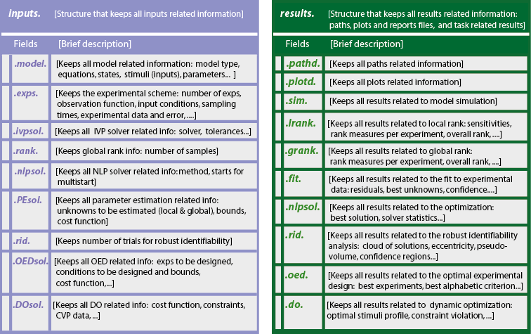
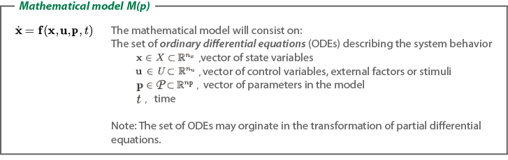
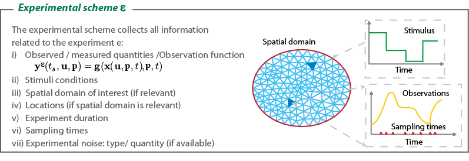

Structures in AMIGO2
Contents
AMIGO2 is programmed using nested structure arrays. In this way all inputs are kept in the structure inputs and all results in the structure results. inputs and results are nested structures with fields containing other structures as described in the following figure:

The structure results will be automatically generated for each task. Results will have different fields depending on the task being performed. For example, results.do will only be generated when running AMIGO_DO.
The user requires to provide the information to fill the inputs structure and the task related fields.
Defining the model

All inputs related to model definition will be kept in the structure: inputs.model. The example shows the minimum inputs required for a model to be defined.
%============================ % MODEL DEFINITION %============================ inputs.model.input_model_type='charmodelC'; % Model introduction: 'charmodelF'|'charmodelM'| % 'matlabmodel'|'sbmlmodel'|'fortranmodel'| % 'blackboxmodel'|'blackboxcost % DEFAULT: 'charmodelM' inputs.model.n_st=7; % Number of states inputs.model.n_par=27; % Number of parameters inputs.model.n_stimulus=1; % Number of stimuli inputs.model.st_names=char('CL_m','CL_c',...% Names of the states 'CL_n','CT_m','CT_c','CT_n','CP_n'); inputs.model.par_names=char('n1','n2','g1','g2','m1','m2','m3','m4','m5','m6',... 'm7','k1','k2','k3','k4','k5','k6','k7','p1','p2',... 'p3','r1','r2','r3','r4','q1','q2'); % Names of the parameters inputs.model.stimulus_names=char('light'); % Names of the stimuli inputs.model.eqns=... % Model equations char('dCL_m=q1*CP_n*light+n1*CT_n/(g1+CT_n)-m1*CL_m/(k1+CL_m)',... 'dCL_c=p1*CL_m-r1*CL_c+r2*CL_n-m2*CL_c/(k2+CL_c)',... 'dCL_n=r1*CL_c-r2*CL_n-m3*CL_n/(k3+CL_n)',... 'dCT_m=n2*g2^2/(g2^2+CL_n^2)-m4*CT_m/(k4+CT_m)',... 'dCT_c=p2*CT_m-r3*CT_c+r4*CT_n-m5*CT_c/(k5+CT_c)',... 'dCT_n=r3*CT_c-r4*CT_n-m6*CT_n/(k6+CT_n)',... 'dCP_n=(1-light)*p3-m7*CP_n/(k7+CP_n)-q2*light*CP_n');
IMPORTANT:
User may select any customised name but: n, t, u, y, ydot, par, tlast, told, pend and v which are reserved words
inputs.model.par=[7.5038 0.6801 1.4992 3.0412 10.0982... 1.9685 3.7511 2.3422 7.2482 1.8981 1.2 3.8045... 5.3087 4.1946 2.5356 1.4420 4.8600 1.2 2.1994... 9.4440 0.5 0.2817 0.7676 0.4364 7.3021 4.5703 1.0]; % Nominal parameter values % These will be changed during % the optimization in PE or REG_PE % These may be overwritten if inputs.PEsol % guess values are % defined
More information regarding the inputs used in this example can be found here. See a working example using AMIGO_SModel.
AMIGO_htmldoc_inputs(inputs,fullfile(pwd,'html','modelex1.html'));
Defining the experimental scheme
The experimental scheme collects all the information related to the experimental setup:
- Obervables
- Number and sensors location
- Number of sampling times and measuring times
- Stimulation conditions
- Experiment(s) duration
The experimental scheme will be fixed to perform simulations, sensitivity analysis, rank of parameters, identifiability analysis and parameter estimation, whereas for the case of optimal experimental design some experiments may be fixed and some experiments or particular experimental conditions are to be designed.

inputs.exps.n_exp=2; for iexp=1:inputs.exps.n_exp inputs.exps.exp_y0{iexp}=zeros(1,inputs.model.n_st); inputs.exps.t_f{iexp}=120; % OBSEVABLES DEFINITION inputs.exps.n_obs{iexp}=2; inputs.exps.obs_names{iexp}=char('Lum','mRNAa'); inputs.exps.obs{iexp}=char('Lum=CL_m','mRNAa=CT_m'); end
See stimuli definition options in more detais.
inputs.exps.u_interp{1}='sustained';
inputs.exps.t_con{1}=[0 120];
inputs.exps.u{1}=1;
inputs.exps.u_interp{2}='pulse-down';
inputs.exps.n_pulses{2}=5;
inputs.exps.u_min{2}=0;inputs.exps.u_max{2}=1;
inputs.exps.t_con{2}=0:12:120;
inputs.exps.n_s{1}=15;
inputs.exps.n_s{2}=25;
More information regarding the inputs used in this example can be found here. See a working example using AMIGO_SObs.
AMIGO_htmldoc_inputs(inputs,fullfile(pwd,'html','obsex1.html'));
Defining the experimental data and the corresponding error information
In addition to the experimental scheme, the structure inputs.exps also collects the experimental data related information which is necessary for the identifiabiliy analysis and parameter estimation. The toolbox offers the possibility of generating pseudo-experimental data by means of simulation. This possibility may be useful for numerical tests. Inputs will be, in general, different for the case when using pseudo and real data.

%================================== % EXPERIMENTAL DATA RELATED INFO %================================== inputs.exps.n_s{1}=15; inputs.exps.n_s{2}=25; inputs.exps.data_type='real'; inputs.exps.noise_type='homo_var'; inputs.exps.exp_data{1}=[ 0.037642 0.059832 1.398618 0.983442 1.606762 0.433379 0.265345 0.628819 1.417288 0.858973 1.381613 0.496637 0.504584 0.717923 1.240249 0.862584 1.180193 0.634508 0.775945 0.679648 1.514514 0.735783 0.904653 0.593644 0.753736 0.759013 1.389312 0.678665 0.833228 0.574736 ]; inputs.exps.error_data{1}=[ 0.037642 0.059832 0.072461 0.013999 0.002877 0.020809 0.050324 0.002705 0.042936 0.017832 0.044338 0.022538 0.016335 0.017981 0.164745 0.035301 0.010631 0.102381 0.127745 0.065791 0.081671 0.049568 0.126739 0.050306 0.006308 0.018894 0.054665 0.066953 0.082163 0.015295 ]; inputs.exps.exp_data{2}=[ 0.146016 0.018152 0.831813 1.002499 1.874870 0.816779 1.927580 0.544111 1.139536 0.354476 0.876938 0.520424 0.559600 0.802322 1.273548 0.939453 1.696482 0.687495 1.065496 0.577896 0.847460 0.524076 0.517520 0.738095 1.162232 0.826737 1.421504 0.779833 1.340639 0.550493 0.563822 0.515605 0.402755 0.714877 1.029856 0.871118 1.490741 0.840174 1.580873 0.692047 0.696610 0.459481 0.141546 0.646803 0.804194 0.925806 1.622378 0.824711 1.525194 0.537398 ]; inputs.exps.error_data{2}=[ 0.146016 0.018152 0.066547 0.045194 0.184009 0.101495 0.047431 0.030858 0.175280 0.033712 0.031945 0.048733 0.107148 0.008715 0.019847 0.072804 0.111892 0.001840 0.104932 0.058752 0.059721 0.033324 0.056537 0.000360 0.051815 0.037473 0.103393 0.028094 0.008084 0.012024 0.188444 0.022982 0.046354 0.031981 0.043436 0.003749 0.030177 0.042560 0.116245 0.110535 0.059345 0.025112 0.218587 0.000564 0.115783 0.043708 0.099239 0.002678 0.010644 0.052990 ];
More information regarding the inputs used in this example can be found here. See a working example using AMIGO_SData.
AMIGO_htmldoc_inputs(inputs,fullfile(pwd,'html','dataex1.html')); %============================ % RESULTS PATHS RELATED DATA %============================ inputs.pathd.results_folder='arabidopsis'; inputs.pathd.short_name='arabidopsis'; inputs.pathd.run_overwrite='on';
Inputs for LRank, GRank, ContourP, RIdent and PE

inputs.PEsol.id_global_theta=char('n1','n2','m1','m4','m6','m7','k1','k4','p3'); inputs.PEsol.global_theta_guess=[... 6.09794 0.710144 8.92735 2.38504 2.11024 1.29912 4.32079 2.45277 0.493076]'; inputs.PEsol.global_theta_max=10.*inputs.PEsol.global_theta_guess; inputs.PEsol.global_theta_min=0.01.*inputs.PEsol.global_theta_guess; inputs.PEsol.id_local_theta_y0{1}=char('CL_c','CP_n'); inputs.PEsol.local_theta_y0_max{1}=[1 1]; inputs.PEsol.local_theta_y0_min{1}=[0 0]; inputs.PEsol.local_theta_y0_guess{1}=[0.5 0.5]; inputs.PEsol.id_local_theta_y0{2}=char('CL_c','CP_n'); inputs.PEsol.local_theta_y0_max{2}=[1 1]; inputs.PEsol.local_theta_y0_min{2}=[0 0]; inputs.PEsol.local_theta_y0_guess{2}=[0.5 0.5]; %================================== % COST FUNCTION RELATED DATA %================================== inputs.PEsol.PEcost_type='lsq'; inputs.PEsol.lsq_type='Q_I'; %================================== % OPTIMIZATION SOLVER RELATED DATA %================================== inputs.nlpsol.eSS.maxtime=10;
In this example we will switch to fortran code generation to accelerate computations.
inputs.model.input_model_type='charmodelC';
More information regarding the inputs used in this example can be found here.
See also
AMIGO_htmldoc_inputs(inputs,fullfile(pwd,'html','parsex1.html'));